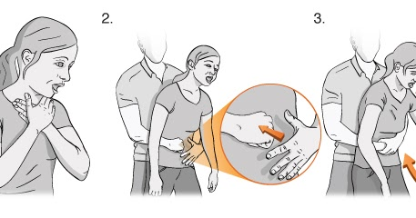
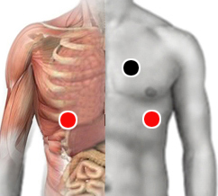

Antes de continuar vea la nota sobre el uso de esta Guía.
- Si la persona puede toser, permítale que siga tosiendo. (no es una obstrucción total).
- Si la persona tiene dificultad para respirar vea sofocación.
- Vea ahogamiento si algún líquido obstruye la respiración.
Atragantamiento
En caso de obstrucción de la vía aerea por cuerpo extraño (OVACE) deberá utilizar la maniobra de Heimlich.
¿Cómo saber si hay una obstrucción total de las vías respiratorias?
En tal caso actuar con rapidez, no introducir la mano en la garganta para tratar de extraer si no está plenamente visible y accesible, de lo contrario pudiera empujar al objeto más adentro.
Si es menor de un año podrá cargar al bebé sobre su antebrazo en una posición estable, si el objeto no sale en forma expontánea pruebe golpendo entre los homóplatos. De ser necesario dar respiración de boca a boca o boca a nariz.
En niños mayores y adultos hacer la maniobra de Heimlich: Colocarse detrás del sujeto con una pierna más adelantada (entre las piernas del sujeto para tener mejor estabilidad). Empuñar una mano y cubrirla con la otra (fig.2). Empujar rápida y brúscamente con ambas manos por debajo del esternón para subir el diafragma (fig.3). Repetir la operación cinco veces seguidas.

La maniobra de Heimlich puede alternarse con 5 golpes fuertes entre los omóplatos con el talón de la mano.
Repetir una y otra vez hasta que el objeto sea desalojado. Si la persona cae inconsciente continuar con Reanimación cardiopulmonar (RCP), ese procedimiento también podrá ayudar a desbloquear las vías respiratorias.
Si la persona es capaz de emitir algún sonido o silbido, proceder con mas cautela ya que usted tiene más tiempo para tomar desiciones.
Se considera ahogamiento el hecho de sufrir dificultades respiratorias como consecuencia de la inmersión (sólo el rostro está inmerso) o sumersión (todo el cuerpo está sumergido) en un líquido. Por lo regular ocurre cuando la persona no sabe nadar y entra en pánico, en algunos casos se puede dar por agotamiento, hipotermia y pérdida de la conciencia (en aguas abiertas).
- Saca a la persona del agua.
- Mantén la calma y llama a los servicios de emergencia (911)
- Si la persona puede toser, permite que tosa para que saque el agua de los pulmones.
- Si la persona está inconsciente recuestala boca arriba con el cuerpo alineado y la cabeza hacia un costado para que pueda sacar el agua. Revisa si respira.
- Si la persona no respira aplicar reanimacion cardiopulmonar.
Probar el par corazón-costilla en caso de sofocación (dificultad respiratoria) por algún padecimiento que afecte al sistema respiratorio como neumonía, fibrosis, etcétera. La sofocación también puede ser consecuencia del Choque anafiláctico
Par
corazón - costilla (bi)

El atragantamiento por objetos es más común en niños, quienes muchas veces llevan dulces u otros objetos en la boca. Evite que los niños tengan el hábito de llevarse objetos a la boca ya sea juguetes o alimentos, explíqueles los riesgos. En adultos es menos frecuente y suele ocurrir al ingerir alimentos.
El ahogamiento ocupa la tercera causa de muerte por accidente a nivel mundial, sólo después de los accidentes de tránsito y caídas, el 60% de las víctimas son menores de 5 años de edad. El ahogamiento puede prevenirse explicando a los niños los riesgos de nadar en albercas, ríos o lagos. Al abordar barcos o botes se deberán de utilizar chalecos salvavidas.
Los bebés y niños pequeños deberán siempre estar bajo la supervisión de un adulto.